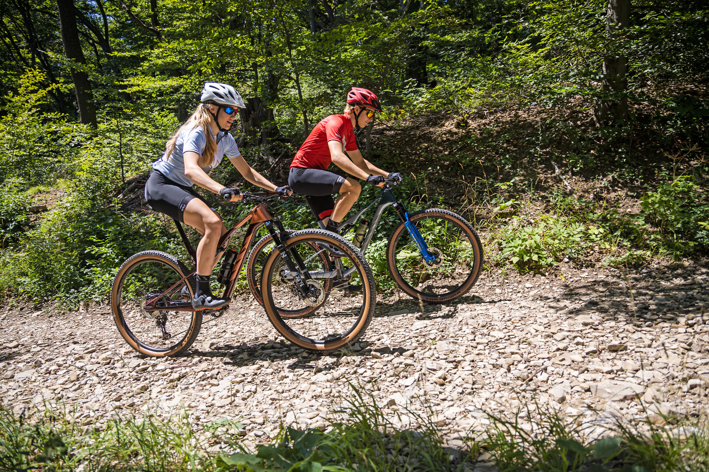

SuomiHelkama
Yli 100-vuoden suomalainen perheyrityksen kokemuksella tehdyt pyörät kaikkiin olosuhteisiin ja tarpeisiin. Kaupungin maastoon, hiekasta asfaltille ja Hangosta Ivaloon.
Kaupunkipyörät
Maastopyörät
Koko perhe
Tutustu Helkamaan →